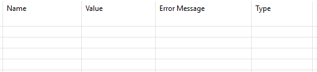

Queries Table Initialization
Once your project is created (see Create a project), you are able to display an empty "Queries Table". This table will allow you to write the name and the value of your queries and to consult their results (once their value is valid and the simulation is launched).

Encode the first Query
However, the first query will not be encodable by using the adding function offered by this table. To encode the first query, follow these steps :
- Go to the graphical modeling area and click on the background of the area
- Go to the "properties" tab situated below the modeling area and select the "Model" subtab
- Click on the "+" button in order to add a query manually from the Properties editor

- Write the name and the value of the first query and click on "Finish"

- Finally, go back to your Queries Table. You can notice that the first query has been added

Add and remove queries manually
Once the first query has been written (see the steps above), you will be able to use functionalities provided by the Queries Table. Two of them consist in adding and removing queries in a simple way. All you have to do is a right-click on the line delimited by the first query and select "Add a query" or "Delete line".
Warning : Do not delete every queries. In order to use the tools offered here, you will always have to make a right-click on a line delimited by a query in the table.
Generate basic Queries
When you make a "right-click" on a query, you also have a "Add basic queries" option. This feature will automatically generate basic queries related to every elements drawn in the modeling area.
Check the validity of your queries
Finally, you will be alble to check the validity of your queries in two ways :
- If the value of an encoded query in the table includes a syntactic or semantic error, the field will be highlighted in red.
- There is also a "check queries" functionnality that can be activated by a right click on the background of the graphical modeling area and select the "Check Queries" option. This functionality also displays details related to errors in order to help you to correct them. This feature is also activated before launching a simulation.